《妈妈宝典》
认识新生儿的特点
宝宝身长一般在50cm左右，肤色红润，哭声非常响亮。
新生儿头部在身体中占的比例会略大一些，头部有两个囟门，前囟和后囟。
一般，前囟在出生后一岁到一岁半会自然闭合。后囟在2～4个月时就会闭合了。
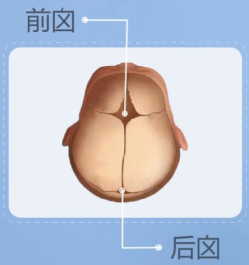
用手触摸宝宝的前囟时，会感受到脉搏一样的波动。新生儿的囟门非常娇嫩，清洁囟门时一定要注意，动作一定要轻。
宝宝出生后的一段时间，睡眠时间比较长，大概在20个小时左右。睡眠时间后均匀分布在几次哺乳之间。
我们抱着宝宝或者在给宝宝喂奶的时候，要做一些护理的时候，可以多和宝宝聊天，说说话，让宝宝熟悉爸爸和妈妈的声音。这也是神经系统刺激的一个部分，也是亲子关系建立的第一步。
如何正确的抱起宝宝
从床上抱起来，
第一步，我们要注意保护宝宝的头和颈部，一只手将宝宝轻轻的托起，另一只手插在头和颈部。然后手托住宝宝的臀部。
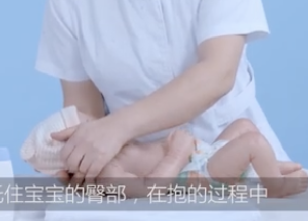
抱的过程中，我们一定要注意保护好，因为宝宝的头和颈还没有发育完善。
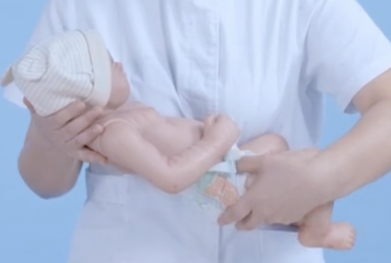
抱的过程中还有一点特别重要，就是要避免摇晃综合征。
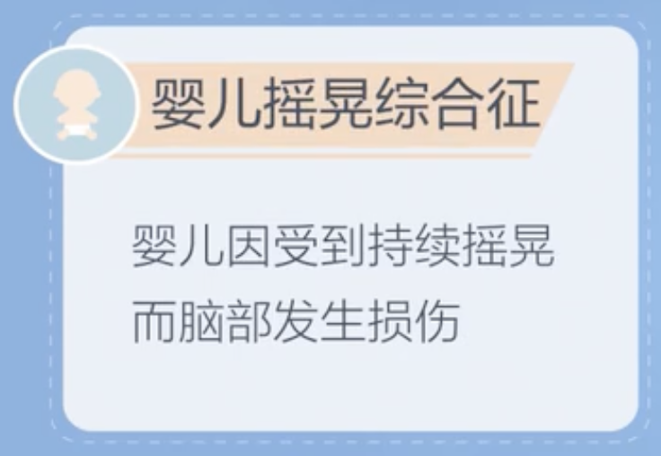
Important
保护头和颈，避免摇晃。
正确的抱姿
摇篮式
把宝宝的头放在你的胳膊的肘窝处，另一只手托住宝宝的臀部。
优点：可以用眼睛看着宝宝，和宝宝交流。
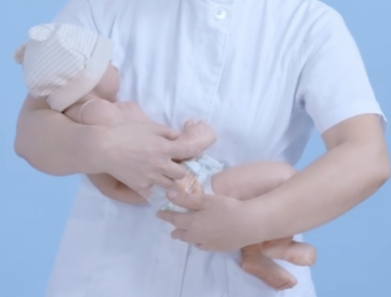
竖抱
从床上抱起，也是要注意宝宝的颈和头，一只手托住，另一手抱住宝宝臀部。这时咱们操作者的身体要尽量的前倾。双手将宝宝向上举，将宝宝的头部放在肩膀上。
当你的手摸到宝宝的耳朵在上方的时候，就可以，说明宝宝的脸已经让出来了，不会引起窒息。
可以把宝宝的小手放出来。
竖抱时，保护好宝宝的头颈部、腰部。不要随便的不托着头颈、来回摇晃，非常危险。
优点：可以拍嗝，非常常用
坐抱
手放到宝宝腋下，让宝宝身体靠着操作者的身体，这样颈部不会受力，是非常安全的。另一只手托住宝宝的腰部。
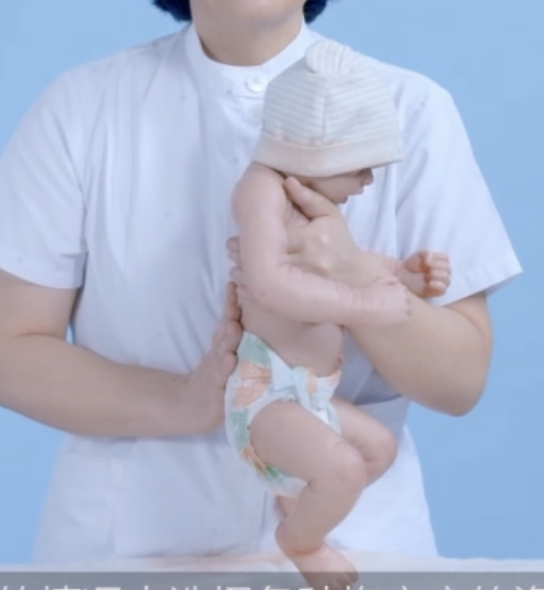
更换尿布湿
由于婴幼儿排便排尿非常的频繁。使用尿布的话，宝宝护理不到位会引起尿布疹。
所以怎么正确的给宝宝更换纸尿裤就显得特别的重要。
可以在每次喂奶前更换纸尿裤，但这也不是绝对的。家长可以根据宝宝的实际情况来确定是否更换纸尿裤。
Tip
每次喂奶前更换纸尿裤
此外，现在有些纸尿裤有的有显示条，有的没有显示条。
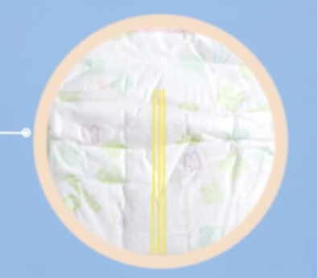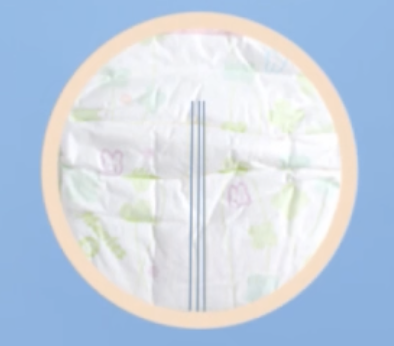
如上图，黄色的显示条，当宝宝尿了以后，它就会变成蓝色的。
Tip
指示线变色时更换
如果没有显示条，咱们可以勤着看一下，如果从侧边看一下里面湿的，或者用手轻轻的触碰一下，沉甸甸的感觉，说明宝宝就该换纸尿裤了。
Tip
侧边触摸手感湿、分量重，即可更换。
Note
只要是宝宝尿了，我们一定要勤换纸尿裤，避免宝宝有尿布疹的发生。
更换纸尿裤：
Step1：首先，把两边的粘扣打开。打开之后一定要反折一下，避免伤到宝宝的皮肤。—— 要点1：粘扣反折，避免伤及皮肤
Step2：如果宝宝拉了大便，可以观察一下颜色是否正常，量多不多。
Step3：两只手把宝宝的脚一攥攥起来，要轻一点，把小屁屁抬起来。这个时候把纸尿裤轻轻的反折一下。——动作要轻

Step4：我们用湿纸巾蘸取刚才的尿液或者便便，但是一定要记住从上往下。特别是女宝宝更要注意这个卫生，不要把宝宝的屁股搞污染了。蘸一次换一个湿纸巾。
Step5：把这个污染的纸尿裤、湿纸巾折叠一下，放到边上。
Step6：把干净的纸尿裤垫在宝宝的屁股下面，这样避免咱们在换的时候TA又尿了。
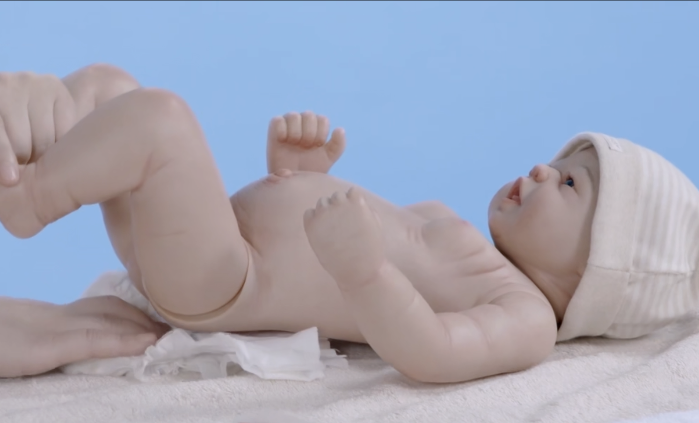
正好这个时间咱们可以晾一下宝宝的小屁屁。
Step7：咱们可以用一下宝宝的护臀霜。一边抹一点。避开宝宝的生殖器和肛门，轻轻薄薄的不要抹太厚。
Note
护臀霜可起到“隔尿”的作用。对宝宝的皮肤是有好处的，用黄豆粒大小就可以。
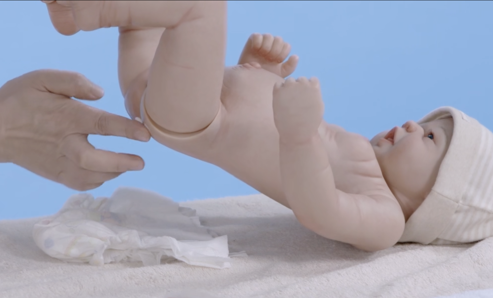
Step8：把纸尿裤垫上，小粘扣粘好。
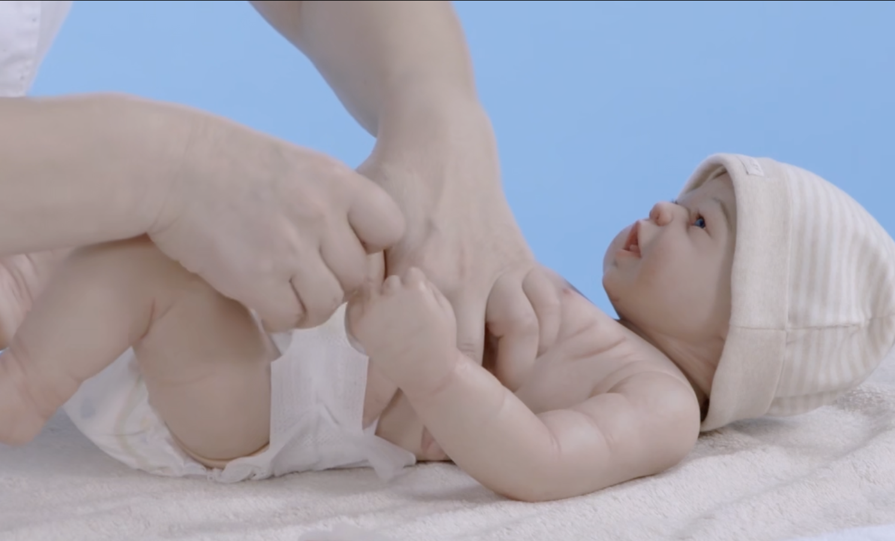
Step9：把纸尿裤的小花边往外掏一下，这样就把它整理好了。
不掏出来，宝宝有时侧着睡，可能尿液会从侧边流出。
有些妈妈疑问，宝宝穿着纸尿裤怎么床也湿了。就是要留意纸尿裤的这个小机关。
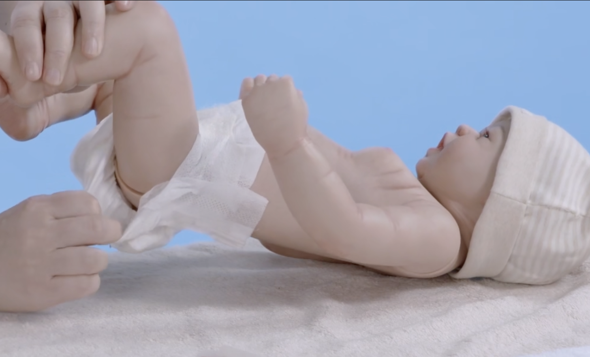
如何给宝宝清洗屁屁